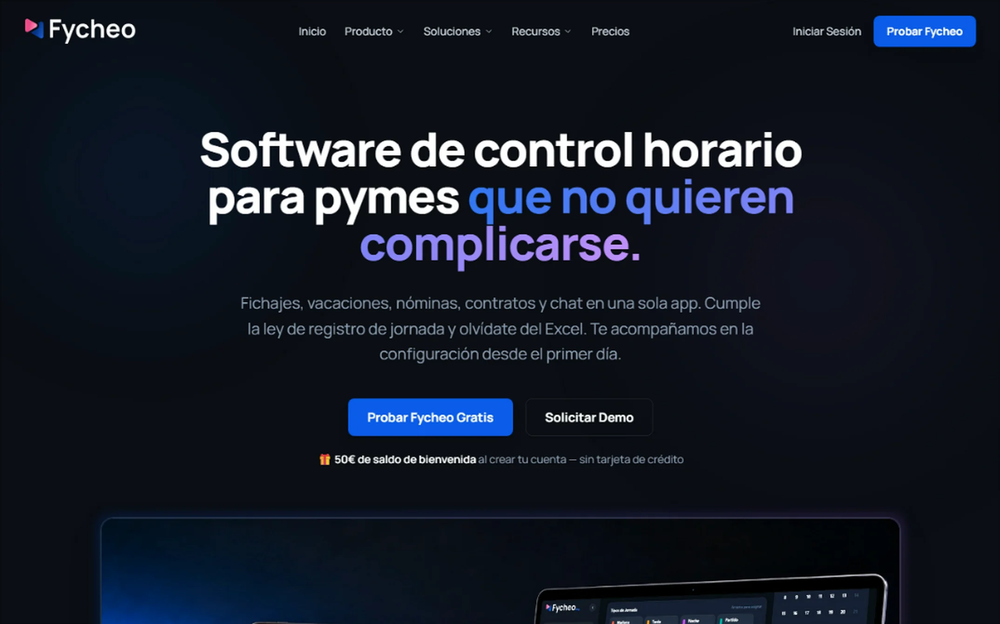
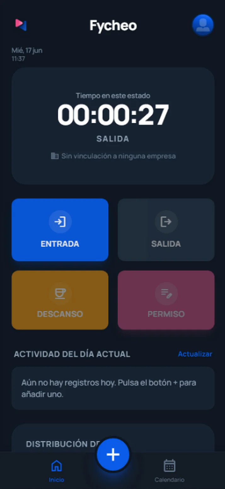
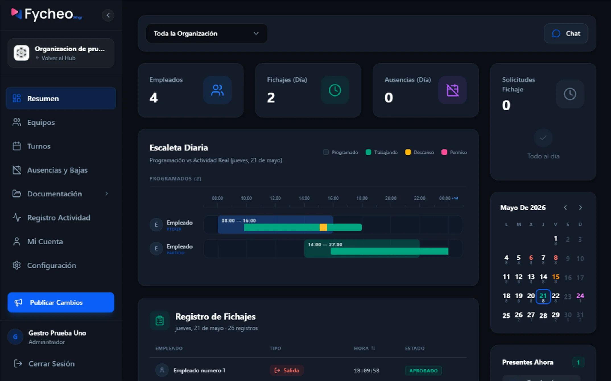
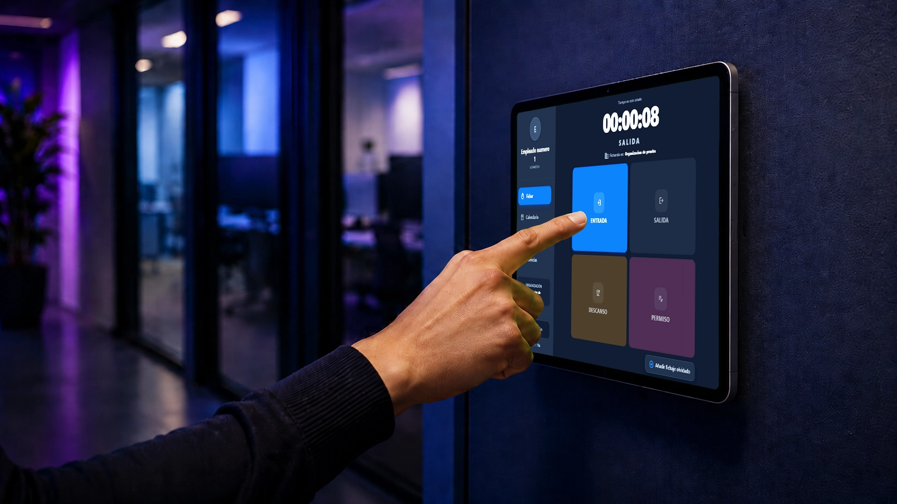
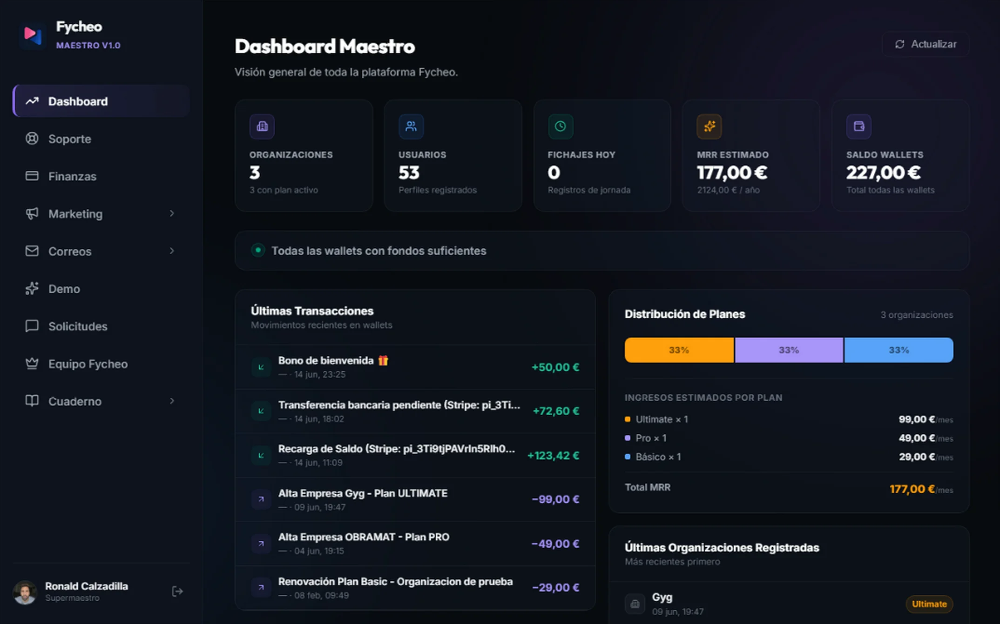
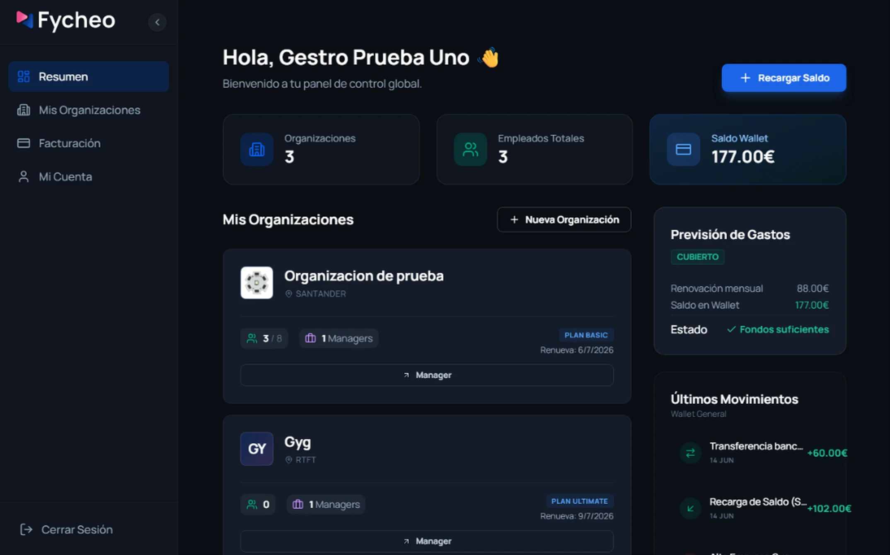
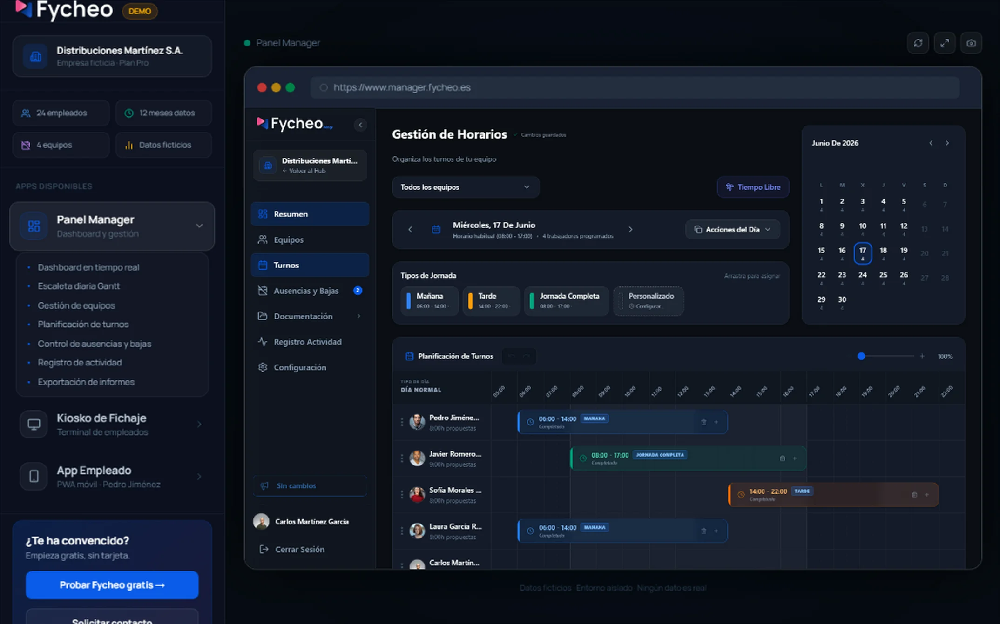

EL CONCEPTO SAAS
Fycheo no es un software de registro de jornada aislado; es un robusto ecosistema de aplicaciones que interactúa de manera reactiva en tiempo real sobre la misma base de datos. Está diseñado bajo un modelo de facturación asíncrono basado en consumo: las organizaciones disponen de un monedero de prepago (Wallet) del cual la plataforma descuenta automáticamente las tarifas y suscripciones de acuerdo con la cantidad de empleados activos, congelando el acceso si el saldo se agota.
INFRAESTRUCTURA TÉCNICA
- TECNOLOGÍAS WEB: React (v18 y v19), TypeScript, Tailwind CSS (v3 y v4) y Vite.
- TECNOLOGÍAS APP: Capacitor CLI para generar y empaquetar ejecutables nativos Android/iOS.
- BASE DE DATOS: Supabase PostgreSQL con disparadores (Triggers) relacionales asíncronos y WebSockets en tiempo real.
- PASARELA DE PAGO: Stripe API asíncrona mediante Supabase Edge Functions con firmas JWT.
01 / PORTAL WEB & ADMINISTRACIÓN WALLET
Fycheo Web
La puerta de entrada a la plataforma. Consiste en la landing page informativa, los flujos de registro del cliente y el portal de administración financiera de la cuenta empresarial. El propietario de la cuenta gestiona desde aquí los límites y recargas a la Wallet de la organización.
- Bono de Registro: Al crear una cuenta se otorgan 50€ de saldo de bienvenida de manera automática.
- Gestión de Wallet: Recarga de saldo con tarjeta de crédito mediante Stripe Elements o visualización de transferencias bancarias pendientes.
- Tarifas por Consumo: Descuentos dinámicos de saldo según el plan (Básico 29€ hasta 8 empleados, Pro 59€ hasta 18 empleados, etc.) y cobros por cada empleado adicional.

// Pantalla: Portal web principal y login de empresas.
02 / APLICACIÓN MÓVIL EMPLEADOS
Fycheo App
La aplicación móvil nativa diseñada específicamente para que los empleados registren sus jornadas laborales (entradas, salidas y descansos) estén donde estén. La app móvil aprovecha el empaquetado nativo para interactuar con APIs de hardware y posee una capa de notificaciones y recordatorios de jornada.
- Módulo de Productividad: Generación de consejos motivadores personalizados y resúmenes de jornada de acuerdo con las horas trabajadas del día.
- Capacitor Core Plugins: Captura de geolocalización GPS asociada al fichaje (`@capacitor/geolocation`) y suscripción a notificaciones push (`@capacitor/push-notifications`).
- Fichajes en 2 Clics: Interfaz ultrarrápida diseñada en modo oscuro nativo para reducir la fricción del marcaje.

// Pantalla: App móvil nativa (Capacitor) con módulo de productividad.
03 / CONTROL DE RECURSOS HUMANOS
Fycheo Manager
El centro administrativo web enfocado a la gerencia y al departamento de RR.HH. Construido sobre React 19 y Tailwind CSS v4, este panel provee gráficos detallados sobre asistencia y control de incidencias, así como la gestión documental de la plantilla.
- Exportaciones Legales: Generación e informes de jornada en PDF con `jspdf` y `jspdf-autotable`, listos para inspecciones laborales.
- Firma de Nóminas y Contratos: Visualización y revisión integrada de contratos y nóminas en PDF con `react-pdf`.
- Importación Masiva: Procesamiento y carga masiva de datos de empleados mediante archivos CSV utilizando `papaparse`.

// Pantalla: Cuadrante horario y control de presencia en vivo.
04 / DISPOSITIVO FÍSICO DE ENTRADA
Fycheo Kiosko
Aplicación web empaquetada con Capacitor para ejecutarse en terminales táctiles tipo tablet fijadas en el acceso de las oficinas o locales físicos. Su objetivo es actuar como un reloj de fichar común para toda la plantilla, sincronizado al instante con la base de datos en la nube.
- Fichajes Rápidos: Marcaje en segundos introduciendo el código PIN único de empleado o escaneando un código QR personal.
- Robustez de Red: Sincronización continua de datos asíncronos con Supabase para prevenir colas y pérdidas de datos.
- Adaptación a Tableta: Interfaz robusta y limpia diseñada para evitar toques involuntarios y facilitar el fichaje ágil.

// Pantalla: Aplicación en modo tableta fija para accesos.
05 / PANEL CONTROLADOR MAESTRO SAAS
Fycheo Maestro
El centro de control administrativo global de la plataforma multi-inquilino (*multi-tenant*). Diseñado de forma exclusiva para el administrador maestro de Fycheo. Sirve tanto para la gestión de colaboradores como para campañas de marketing y envíos masivos mediante su propio servidor de correo integrado.
- Servidor de Correo & Marketing: Envío automático de newsletters, notificaciones transaccionales y campañas de captación a través de un servidor de correo SMTP propio y optimizado.
- Control de Colaboradores: Habilitación, registro y limitaciones operativas de los colaboradores y socios comerciales.
- Métricas B2B: Monitorización de consumo de bases de datos, volúmenes de facturación acumulados y número de organizaciones activas.
- Gestión de Licencias: Aprovisionamiento asíncrono y control de licencias y tarifas asignadas a cada distribuidor.

// Pantalla: Panel de control maestro B2B para revendedores.
06 / PROCESAMIENTO FINANCIERO REACTIVO
Wallet & Cobros Asíncronos
El motor financiero del SaaS. Fycheo calcula y actualiza los saldos (tanto a nivel de empresa en `companies` como personal a nivel de perfiles en `profiles`) a través de un sistema transaccional automatizado en base de datos.
- PostgreSQL Triggers: Disparador asíncrono `on_transaction_change` que recalcula el `wallet_balance` de la empresa o usuario de inmediato al insertar, modificar o eliminar transacciones financieras.
- Supabase Edge Functions: Funciones del servidor `create-payment-intent` y `stripe-webhook` que se comunican de forma segura con Stripe para confirmar las recargas y reflejarlas en tiempo real en la base de datos.
- Seguridad Row Level (RLS): Políticas estrictas de Supabase que garantizan que el propietario de la organización solo acceda a su propia wallet e historial de facturación.

// Pantalla: Wallet de la empresa y recargas de saldo.
07 / EVALUACIÓN CON DATOS SEMILLA
Fycheo Demo
Un entorno de demostración independiente configurado con datos simulados. Está diseñado para que potenciales clientes y reclutadores interactúen con la plataforma a nivel de pruebas sin necesidad de registrarse o introducir datos financieros reales.
- Reset Automático: Funciones programadas en la base de datos para borrar registros de pruebas y restaurar el set de datos inicial.
- Roles Simulados: Capacidad de alternar instantáneamente entre la vista de un empleado en la app móvil y el administrador de RR.HH. en el manager.
- Simulador de Fichajes: Generación de datos de fichajes semilla para evidenciar de forma inmediata la reactividad y actualizaciones en vivo de los paneles.

// Pantalla: Sandbox precargado con turnos y fichajes semilla.
RESUMEN DEL IMPACTO TÉCNICO
El ecosistema de Fycheo es un caso de estudio real sobre el diseño e implementación de un producto SaaS multiplataforma robusto. La integración asíncrona de cobros en una Wallet reactiva gestionada con disparadores de PostgreSQL y Webhooks de Stripe, junto con las apps nativas compiladas mediante Capacitor (Kiosko y App) y la sincronización de datos en tiempo real mediante Supabase, demuestra un dominio integral de las tecnologías de frontend moderno y el diseño de sistemas distribuidos.